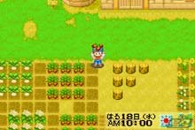

Bokujou Monogatari: Mineral Town no Nakamatachi
Harvest Moon: Friends of Mineral Town
Datas de lançamentos:
Japão - 18/04/2003
América do Norte - 12/11/2003
Europa - 05/03/2004
A cachorra de Barley, Hanna, não terá filhotes neste jogo(Friends of Mineral Town)
|  | Harvest Moon: Friends of Mineral Town é o primeiro jogo de Harvest Moon lançado especificamente para o sistema do Game Boy Advance. A história do jogo é baseada em Harvest Moon: Back to Nature para o console Playstation. Os mesmos personagens do BTN aparecem no novo jogo FoMT, entre alguns personagens que entram no jogo via o cabo link do Gamecube e Harvest Moon: A Wonderful Life para o Gamecube. |
 DownloadsOops!Controles & MenuInformação sobre StaminaGamecube LinkupCidade MineralPersonagensFestivais & EventosReceitas de CozinhaMineraçãoPescariaSe CasandoCompras pela TVPower BerriesGemasAprimoramentosFerramentasAnimaisCasasPlantandoLista de Itens para EntregaSua Família DownloadsOops!Controles & MenuInformação sobre StaminaGamecube LinkupCidade MineralPersonagensFestivais & EventosReceitas de CozinhaMineraçãoPescariaSe CasandoCompras pela TVPower BerriesGemasAprimoramentosFerramentasAnimaisCasasPlantandoLista de Itens para EntregaSua Família |
|